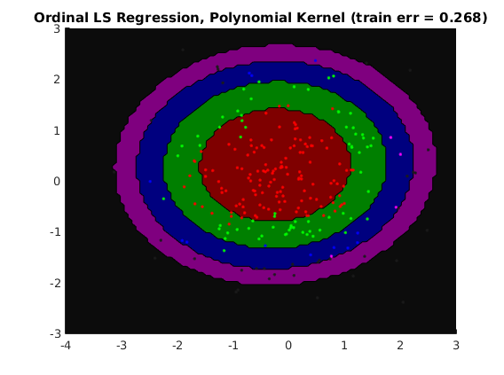

Contents
- Description of demo_ordinal_kernel.m
- usage of ordinal regression for classification, polynomial kernel
- usage of ordinal regression for classification, rbf kernel
- usage of ordinal logistic classification, rbf kernel
- usage of softmax classification, rbf kernel
- usage of SSVM loss for classification, polynomial kernel
Description of demo_ordinal_kernel.m
Shows performance of kernelized multiclass softmax classification, SSVM multiclass classification, kernelized ordinal logistic regression, and kernelized ordinal regression for multiclass classification
clear all close all generateData_ordinal_2D
usage of ordinal regression for classification, polynomial kernel
kernelOptions = []; kernelOptions.d = 2; kernelOptions.bias = 1; subOptions = []; subOptions.kernelFunc = @ml_kernel_poly; subOptions.kernelOptions = kernelOptions; options = struct('nClasses',nClasses,... 'regressionFunc', @ml_regression_kernel, ... 'subOptions', subOptions); model = ml_ordinal_regression(Xtrain,ytrain,options); yhatTest = model.predict(model, Xtest); yhatTrain = model.predict(model, Xtrain); testError = sum(ytest~=yhatTest)/length(ytest); model.trainError = sum(ytrain~=yhatTrain)/length(ytrain); fprintf('Averaged misclassification test error with %s is: %.3f\n', ... model.name, testError); linear_makeOneContourPlot(Xtrain,ytrain, model)
Averaged misclassification test error with Ordinal LS Regression, Polynomial Kernel is: 0.256
usage of ordinal regression for classification, rbf kernel
kernelOptions = []; kernelOptions.sigma = 1; subOptions = []; subOptions.kernelFunc = @ml_kernel_rbf; subOptions.kernelOptions = kernelOptions; options = struct('nClasses',nClasses,... 'regressionFunc', @ml_regression_kernel, ... 'subOptions', subOptions); model = ml_ordinal_regression(Xtrain, ytrain, options); yhatTest = model.predict(model, Xtest); yhatTrain = model.predict(model, Xtrain); testError = sum(ytest~=yhatTest)/length(ytest); model.trainError = sum(ytrain~=yhatTrain)/length(ytrain); fprintf('Averaged misclassification test error with %s is: %.3f\n', ... model.name, testError); linear_makeOneContourPlot(Xtrain,ytrain, model)
Averaged misclassification test error with Ordinal LS Regression, RBF Kernel is: 0.244
usage of ordinal logistic classification, rbf kernel
kernelOptions = []; kernelOptions.sigma = 1; trainFunc = @ml_kernel_ordinal_logistic; options = struct('nClasses', nClasses,... 'kernelFunc', @ml_kernel_rbf, ... 'kernelOptions', kernelOptions); model = ml_kernel_ordinal_logistic(Xtrain, ytrain, options); yhatTest = model.predict(model, Xtest); yhatTrain = model.predict(model, Xtrain); testError = sum(ytest~=yhatTest)/length(ytest); model.trainError = sum(ytrain~=yhatTrain)/length(ytrain); fprintf('Averaged misclassification test error with %s is: %.3f\n', ... model.name, testError); linear_makeOneContourPlot(Xtrain,ytrain, model)
Averaged misclassification test error with Ordinal Logistic Regression, RBF Kernel is: 0.040
usage of softmax classification, rbf kernel
kernelOptions = []; kernelOptions.sigma = 1; options = struct('nClasses',nClasses, ... 'kernelFunc',@ml_kernel_rbf, ... 'kernelOptions',kernelOptions); model = ml_multiclass_kernel_softmax(Xtrain,ytrain,options); yhatTest = model.predict(model, Xtest); yhatTrain = model.predict(model, Xtrain); testError = sum(ytest~=yhatTest)/length(ytest); model.trainError = sum(ytrain~=yhatTrain)/length(ytrain); fprintf('Averaged misclassification test error with %s is: %.3f\n', ... model.name, testError); linear_makeOneContourPlot(Xtrain,ytrain, model)
Averaged misclassification test error with RBF Kernel Classification, Softmax Loss is: 0.112
usage of SSVM loss for classification, polynomial kernel
kernelOptions = []; kernelOptions.d = 2; kernelOptions.bias = 1; options = struct('nClasses',nClasses, ... 'kernelFunc',@ml_kernel_poly, ... 'kernelOptions',kernelOptions,... 'link','ssvm'); model = ml_multiclass_kernel_softmax(Xtrain,ytrain,options); yhatTest = model.predict(model, Xtest); yhatTrain = model.predict(model, Xtrain); testError = sum(ytest~=yhatTest)/length(ytest); model.trainError = sum(ytrain~=yhatTrain)/length(ytrain); fprintf('Averaged misclassification test error with %s is: %.3f\n', ... model.name, testError); linear_makeOneContourPlot(Xtrain,ytrain, model)
Averaged misclassification test error with Polynomial Kernel Classification, SSVM Loss is: 0.164